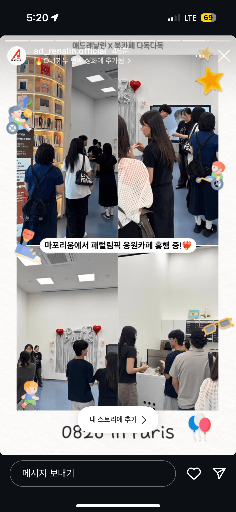
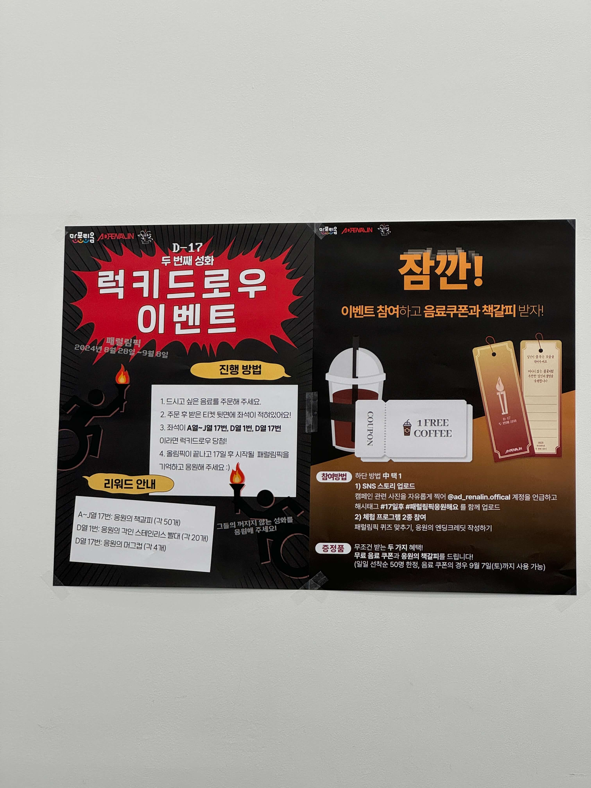
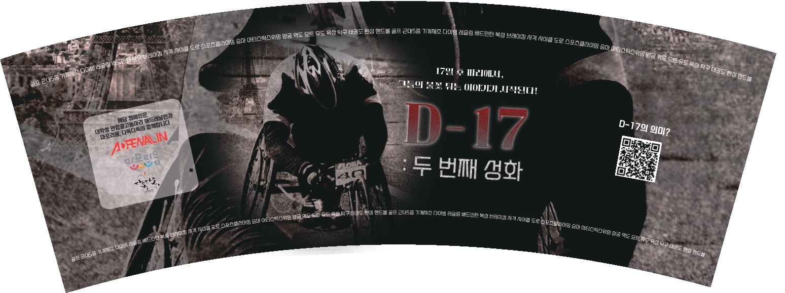
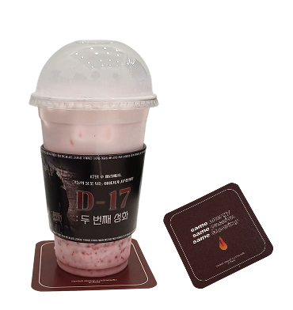
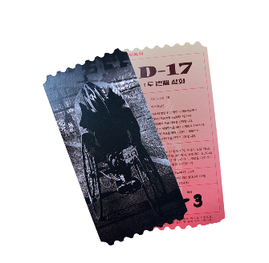
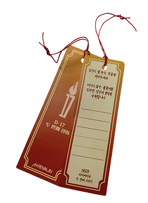

패럴림픽 응원카페 캠페인 기획 및 운영
무겁고 낯선 주제를 친근하게 풀어낸 공간 기획










업무 요약
대학생 연합 광고동아리 '애드레날린'에서 '패럴림픽 응원카페' 콘셉트의 오프라인 캠페인 기획. 북카페 '다독다독'과 협업하여 이틀간 운영
업무 내용 · 전략
[WHY]
패럴림픽은 학생들에게 무겁고 낯설게 느껴지는 주제라, 이를 재밌고 친근한 방식으로 전달할 방법이 필요했음
[REASON]
또래 사이에서 익숙한 '생일카페' 포맷을 차용하면 낯선 주제도 부담 없이 다가갈 수 있다고 판단해, 곧 개최될 패럴림픽을 '곧 개봉할 영화'로 재구성한 영화 카페 콘셉트를 고안
[HOW]
음료 구매자에게 영화 콘셉트의 컵홀더·티코스터·페이크 영화 티켓을 제공하고, 티켓 뒷면 좌석 번호로 경품(책갈피·빨대·머그컵)을 받는 럭키드로우를 운영. 엔딩크레딧(응원메시지) 작성, 퀴즈 참여 등에도 경품을 증정
성과 · 결과
이틀간 방문객 175명
"좋은 캠페인 열어주어 고맙다"
"패럴림픽에 대해 생각해볼 수 있는 귀중한 시간이었다"